Source Sampling¶
| Author: | Elliott Biondo |
|---|
Theory¶
Meshes can be used to represent particle source distributions for Monte Carlo radiation transport. On a mesh, source intensity is discretized spatially (into mesh volume elements) and by energy (into energy bins). In order to randomly sample these distributions to select particle birth parameters (position, energy, statistical weight) a discrete probability density function (PDF) must be created, which can be sampled with pseudo-random variates. It is convenient to create a single PDF to describe all of phase space; in other words, each bin within the PDF represents the probability that a particle is born in a particular energy group within a particular mesh volume element.
In pyne, meshes define volumetric source density  with units of
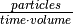. In order to find the source
intensity of a single phase space bin (of index
with units of
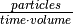. In order to find the source
intensity of a single phase space bin (of index  ), the density must be
multiplied by the volume of the mesh volume element:
), the density must be
multiplied by the volume of the mesh volume element:
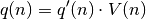
The probability  that a particle is born into a particular phase space
bin is given by the normalized PDF:
that a particle is born into a particular phase space
bin is given by the normalized PDF:
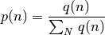
where  is the total number of phase space bins (the number of mesh
volume elements and energy groups). Phase-space bins can be selected from this
PDF and all particles will have a birth weight of 1. This is known as analog
sampling. Alternatively, a biased source density distribution 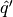
can be specified yielding a biased PDF 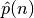. Sampling the biased
PDF requires that particles have a statistical weight:
is the total number of phase space bins (the number of mesh
volume elements and energy groups). Phase-space bins can be selected from this
PDF and all particles will have a birth weight of 1. This is known as analog
sampling. Alternatively, a biased source density distribution 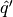
can be specified yielding a biased PDF 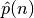. Sampling the biased
PDF requires that particles have a statistical weight:
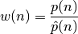
Once a phase space bin is selected a position must be sampled uniformly within the selected mesh volume element to determine the (x, y, z) birth position, and energy must be uniformly sampled uniformly within the selected energy bin.
Implementation¶
The Sampler class reads 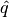 and optionally from a
MOAB mesh. PDFs are created using the method described above. In order to efficiently
sample these PDFs an alias table is created [1][2]. This data structure requires an
 setup step, but then allows for 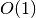 sampling. Monte
Carlo radiation transport typically involves the simulation of
setup step, but then allows for 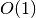 sampling. Monte
Carlo radiation transport typically involves the simulation of  to 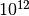 particles, so this expensive setup step is well-justified.
to 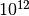 particles, so this expensive setup step is well-justified.
In the analog sampling mode, an alias table is created from  . In the
uniform and user-specified sampling modes, an alias table is created from
and birth weights are calculated for each phase space bin. In
the uniform sampling mode, is created by assigning a total
source density of 1 to each mesh volume element, so that all space is sampled
equally. Within each mesh volume element, a normalized PDF is created on the
basis of source densities at each energy.
. In the
uniform and user-specified sampling modes, an alias table is created from
and birth weights are calculated for each phase space bin. In
the uniform sampling mode, is created by assigning a total
source density of 1 to each mesh volume element, so that all space is sampled
equally. Within each mesh volume element, a normalized PDF is created on the
basis of source densities at each energy.
The method for uniformly sampling within a mesh volume element of Cartesian mesh
is straightforward. A vertex of the hexahedron ( ) is chosen and three
vectors are created:
) is chosen and three
vectors are created:  ,
,  , and
, and  .
Each vector points to an adjacent vertex (in the x, y, z, direction
respectively) with a magnitude equal to the length of the edge connecting the
vertex to the adjacent vertex. Three random variates are chosen (
.
Each vector points to an adjacent vertex (in the x, y, z, direction
respectively) with a magnitude equal to the length of the edge connecting the
vertex to the adjacent vertex. Three random variates are chosen ( ,
,
 , 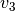) in order to randomly select a position (
, 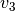) in order to randomly select a position ( )
within the hexahedron:
)
within the hexahedron:
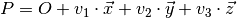
A similar method is used for uniformly sampling within a tetrahedron, as described in [3].
Assumptions¶
The Sampler class chooses the (x, y, z) position within a mesh volume element with no regard for what geometry cell it lies in. Cell rejection must be implemented within the physic-code-specific wrapper script.
Sample Calculations¶
This section provides the sample calculations to justify the results in the nosetests: test_uniform, test_bias, test_bias_spatial.
Consider a mesh with two mesh volume elements with volumes (3, 0.5). The source on the mesh has two energy groups. The source density distribution is:

The source intensity is found by multiplying by the volumes:
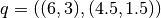
Normalizing yields the analog PDF:
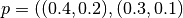
Case 1: Uniform Sampling¶
For uniform sampling the biased source density distribution is created by normalizing the source density to 1 within each mesh volume element:
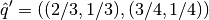
The biased source intensity is found by multiplying by the volumes:
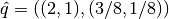
Normalizing yields the biased PDF:
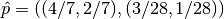
The weights of particle born from these phase space bins should then be the ratio of the unbiased to biased PDF values:
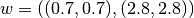
Case 2: User-Specified Biasing¶
Now consider some user-specified bias source density distribution:
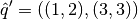
The biased source intensity is found by multiplying by the volumes:
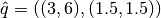
Normalizing yields the biased PDF:
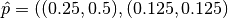
The weights of particle born from these phase space bins should then be the ratio of the unbiased to biased PDF values:
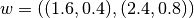
References¶
[1] M. D. Vose, IEEE T. Software Eng. 17, 972 (1991)
[2] A. J. Walker, Electronics Letters 10, 127 (1974); ACM TOMS 3, 253 (1977)
- [3] C. Rocchini and P. Cignoni, “Generating Random Points in a Tetrahedron,”
- Journal of Graphics Tools, 5, 200–202 (2001).
Further Reading¶
- [4] E. Biondo, A. Davis, A. Scopatz, P. P.H. Wilson, “Rigorous Two-Step
- Activation for Fusion Systems with PyNE,” Proc. of the 18th Topical Meeting of the Radiation Protection & Shielding Division of ANS, Knoxville, TN (2014).
- [5] Relson, E. “Improved Methods For Sampling Mesh-Based Volumetric Sources In
- Monte Carlo Transport.” MS thesis University of Wisconsin, Madison WI, 2013.